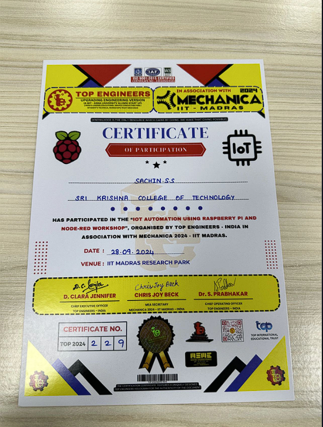
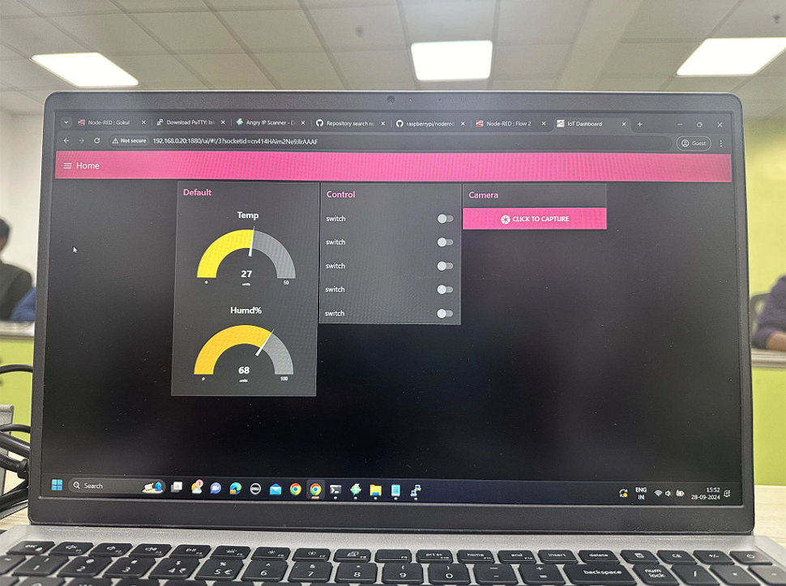
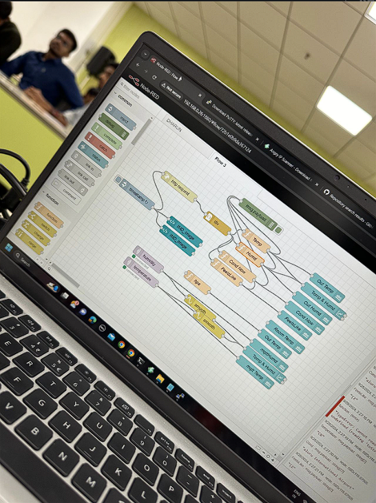

📅 Date: September 28, 2023



Attended an insightful workshop on Raspberry Pi and Node-RED at IIT Chennai under the expert guidance of Sreeram Ravishankar. Explored IoT applications through hands-on projects, deepening my technical skills and igniting my passion for innovation in technology.
Grateful for the opportunity to connect with fellow enthusiasts and learn from industry leaders. Special thanks to my buddy Monisha Yuvaraj for staying with me throughout the program! 🙌